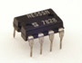
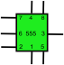
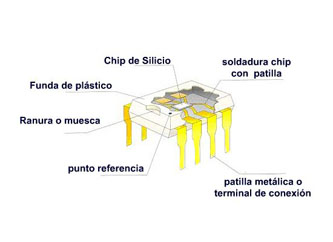

CIRCUITOS INTEGRADOS
Desde 1947, fecha en la que se inventó el primer transistor, se han
venido produciendo nuevos avances tendentes a reducir su tamaño. El tamaño de un
transistor viene dado por el calor que debe disipar. Si conseguimos que trabajen
con corrientes y tensiones extremadamente pequeñas, podremos reducir su tamaño e
interconectarlos para formar diminutos circuitos electrónicos. Todos los
componentes discretos (condensadores, resistencias, transistores, diodos...) de
diminutas dimensiones se insertan en el interior de de pequeños chips, obtendremos, así,
los circuitos integrados.
El primer circuito integrado fue desarrollado por
Jack Kilby, en 1958, para la compañía Texas Instruments, su tamaño era
similar a una moneda de un euro.
El pequeño chip de silicio de un circuito integrado, está instalado dentro de una funda de plástico y
conectado a un juego de patillas o terminales de conexión situado en los laterales de la funda.


Entre los circuitos integrados mas utilizados tenemos reguladores de tensión,
el temporizador 555, los amplificadores operacionales, las puertas lógicas...y
existen chips muy complejos, como el denominado microprocesador, que
constituye el cerebro de los ordenadores y está formado por más de 40 millones
transistores.
Se
utilizan circuitos integrados en más aparatos de los que creemos:
electrodomésticos (lavadoras, frigoríficos, hornos programables
), dispositivos
para grabar o reproducir imágenes y sonidos (videocámaras, televisores, equipos
de música
), ordenadores, etc.
Veamos brevemente el proceso de
fabricación de los chips. |
Proceso de Fabricación
Durante el proceso de fabricación hay que ubicar, en un espacio semejante al
tamaño de una uña, millones de transistores y de interconexiones.
1º Diseño del circuito electrónico que
se va a miniaturizar.
2º Obtención de oblea de silicio. Los chips
se obtienen a partir de un cilindro de silicio cortado en láminas de unos 025
mm de espesor.

¿Por qué se denomina chip a la oblea de silicio? porque tiene el aspecto de una
patata frita, y en inglés se denomina chip.
3º Sobre la oblea de Silicio, mediante
técnicas fotolitográficas, se imprimen o copian los circuitos
previamente diseñados (caben muchos circuitos sobre la misma oblea).
4º Con posterioridad se cortan, se extraen los pequeños chips y se
monta cada uno en su cápsula.
El silicio ha de tener un elevado grado de pureza. Además, la fabricación de
chips tiene lugar en laboratorios donde se vigilan las condiciones ambientales
para que no haya polvo, puesto que una simple mota podría estropear el chip, al
quedar cortocircuitadas las pistas.
A continuación se muestra una ilustración de la cápsula del temporizador 555:

|